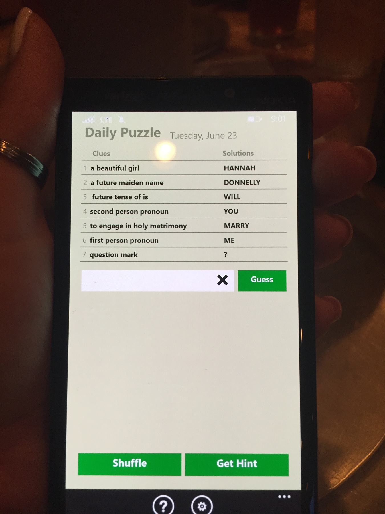

Our Story
How We Mets
 Preston and I met in high school while I was working on a group project at his house with his brother, Cason. I had been bugging Cason to have his brother come down to the basement so that I could meet him because I had never seen him before at school. So one day, Preston finally decided to appease me, and he came down to the basement and we met. I wish I could say that it was love at first site, but we really just said hello and didn't talk again for a while.
Preston and I met in high school while I was working on a group project at his house with his brother, Cason. I had been bugging Cason to have his brother come down to the basement so that I could meet him because I had never seen him before at school. So one day, Preston finally decided to appease me, and he came down to the basement and we met. I wish I could say that it was love at first site, but we really just said hello and didn't talk again for a while.
Preston and I actually became friends later that year when he started hanging out with his brother's and my group of friends. In June 2008, I did a scavenger hunt with my friends and ended up kissing Preston as part of the scavenger hunt because he was "a boy I had no romantic affiliation with." After the kiss, we went on a few dates and went to our high school's homecoming dance together, but nothing serious came out of these events.
Preston and I both ended up attending college at the University of Tennessee Knoxville. At the beginning of his sophomore year and my junior year, we began hanging out more frequently. On September 29, 2011, we went to Columbia, South Carolina, to visit our friend, Kendrick. During this car ride, I asked him to be my date to an upcoming date party with my sorority, and he said yes! Later that evening, while watching Finding Nemo, we started dating, and we have been together ever since!
Our Engagement
When Preston came to visit in Knoxville on May 9, 2015, I had a suspicion we might get engaged while he was in town based on the time frame we had talked about. I had to work in the morning, so Preston told me that we would go to the park to fly kites that afternoon. Now, we had never flown a kite before in all our years of dating, so I was very suspicious. I picked up Preston after work, and we went to my apartment so I could change out of my work clothes. Out of my suspiciousness, I specifically asked Preston if I should wear something nice in case we "wanted to go to dinner later." When he told me to wear whatever I wanted for the park, he threw my suspicion off, so I picked a practical workout tank top, sports bra, and leggings.
We passed several other parks on the way to the park we were going to, but I didn't say anything so that I wouldn't ruin any plans he might have already made. Once at the park, he picked a very strange area for us to fly the kite in (there were a lot of trees and people around). After flying the kite for a while, we decided to sit down to see if the wind picked up. I noticed that the bench Preston picked for us to sit on was the same bench we sat on during our first date in high school.
As we sat, we discussed our upcoming trip, and Preston was acting totally normal, so I began to feel less suspicious and thought maybe we weren't getting engaged that day after all! Preston then asked me if I wanted to play a game on his phone that we frequently play together called "Seven Little Words". We always saved the daily puzzle to play together, but I had already played that day's puzzle. He told me that it was ok, and that for some reason his puzzle might be different that day. For whatever reason, I didn't find this suspicious at all!
As soon as Preston handed me the phone with the game, I realized I hadn't played the game on the screen already that day. I thought I had gone crazy! I knew I had already played the game earlier that day. The game consists of guessing seven words in a row using a bank of letters. I never solve the puzzles in order, so I solved the words "will" and "you" without noticing anything. I became suspicious when I saw a question mark in the letter bank because the game never uses punctuation. The clue for the fifth word said "to engage in holy matrimony" and at that point, I looked at Preston and said, "You wrote this, didn't you?" He said, "Why do you think that?", so I continued to play. The final solution to the puzzle said, "Hannah Donnelly Will You Marry Me ?". Then Preston got down on one knee, proposed, and I quickly said yes! My sister was hidden behind us taking pictures the whole time! It was the best day ever. We then got to go tell our parents (Preston had already asked my dad for permission, but no one knew when it was happening).
Afterwards, we changed clothes for dinner at Ruth Chris steakhouse downtown where Preston had delivered a dozen roses for me earlier in the day. We arrived to free champagne and a specially decorated table for the occasion. It was seriously the best day ever, and I wish I could relive it over and over again.